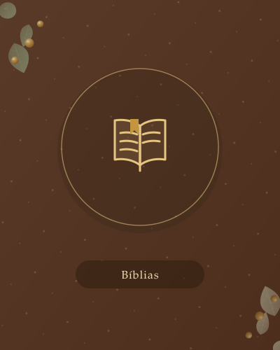
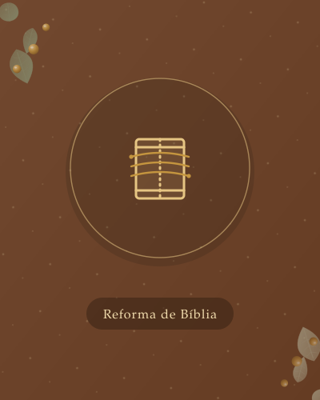
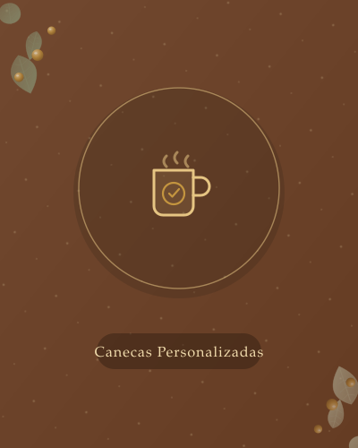
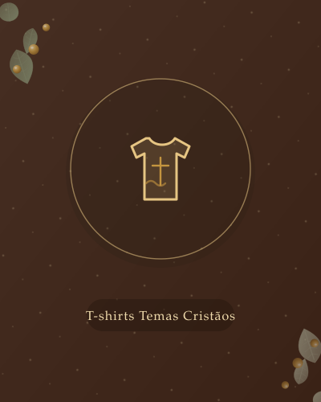
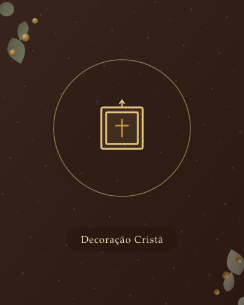

DestaquePromoção
Bíblias
Bíblia Sagrada Capa em Pele Gravada
Bíblia Sagrada (Almeida Revista e Atualizada) com capa em pele sintética castanha, nome ou iniciais gravados a relevo e fecho em botão de pressão.
Artesanato · Fé
"Se tiverdes fé do tamanho de um grão de mostarda…"Lucas 17:6 · Mateus 17:20
Cada peça é preparada individualmente no nosso ateliê — não trabalhamos em produção em série.
Sem checkout automático: falamos diretamente consigo para confirmar o pagamento.
Preparamos e enviamos através dos CTT para qualquer morada em Portugal.
Cada encomenda sai das nossas mãos, com atenção ao detalhe do início ao fim.
Destaques

Bíblia Sagrada (Almeida Revista e Atualizada) com capa em pele sintética castanha, nome ou iniciais gravados a relevo e fecho em botão de pressão.




A nossa história
"Se tiverdes fé do tamanho de um grão de mostarda, direis a esta amoreira: desarraiga-te e planta-te no mar; e ela vos obedecerá."Lucas 17:6 · Mateus 17:20
O nome "Grão de Mostarda" nasce de uma frase de Jesus em Lucas 17:6: "Se tiverdes fé do tamanho de um grão de mostarda, direis a esta amoreira: desarraiga-te e planta-te no mar; e ela vos obedecerá." É também mencionado …
Conhecer a nossa históriaComo funciona
Navegue pelas 9 categorias do ateliê e encontre a peça certa para si ou para oferecer.
Finalize no carrinho e envie o pedido — por e-mail ou WhatsApp — com os seus dados de entrega.
Entramos em contacto pelo WhatsApp para confirmar o pagamento antes da produção.
Preparamos a sua peça à mão e enviamos para a morada indicada, com todo o cuidado na embalagem.
Quem já comprou
O site é novo em folha — seja das primeiras pessoas a partilhar a sua experiência com o ateliê.
Falar connoscoComece hoje
"Se tiverdes fé do tamanho de um grão de mostarda, direis a esta amoreira: desarraiga-te e planta-te no mar; e ela vos obedecerá."